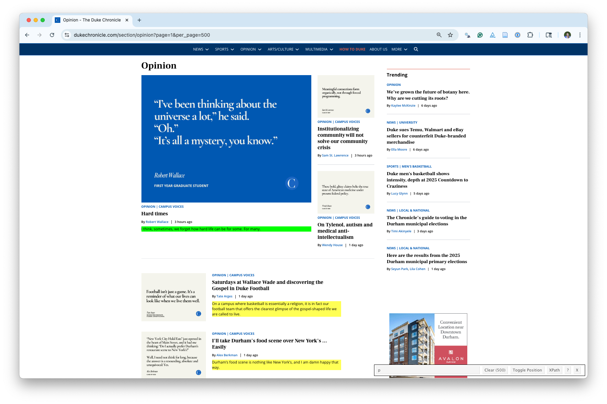
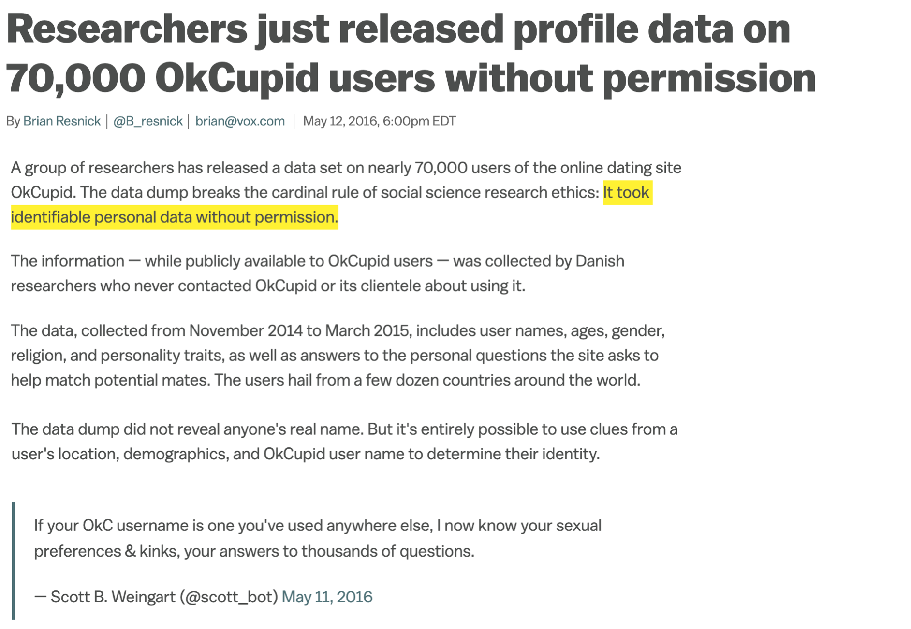
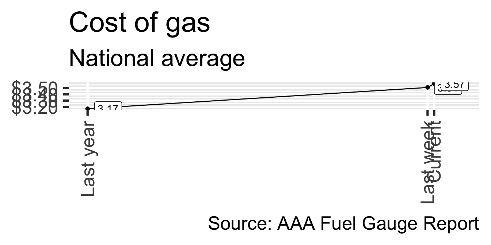
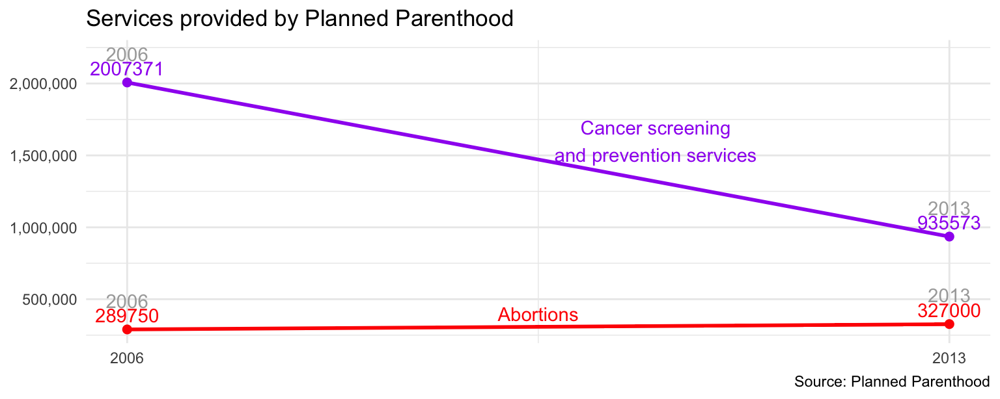
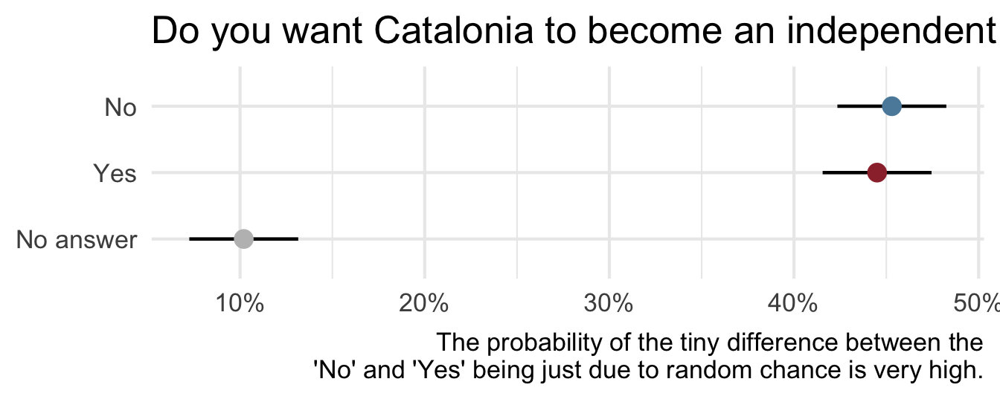

Data science ethics
Lecture 14
Duke University
STA 199 - Fall 2025
October 16, 2025
Warm-up
While you wait: Participate üì±üíª
Put the folllowing tasks in order to scrape data from a website:
- Use the SelectorGadget identify tags for elements you want to grab
- Use
read_html()to read the page’s source code into R - Use other functions from the rvest package to parse the elements you’re interested in
- Put the components together in a data frame (a tibble) and analyze it like you analyze any other data

Scan the QR code or go to app.wooclap.com/sta199. Log in with your Duke NetID.
Announcements
Milestone 2 (proposal) due tonight at 11:59 pm, you will not be able to push changes to your repo after this time!
Do not forget to fill out peer evaluations for your teammates on TEAMMATES!
Office hours change: For this Friday (10/17) only, my office hours will be on Zoom (bit.ly/minezoom) from 3:30-4:30 pm.
From last time
A new R workflow
When working in a Quarto document, your analysis is re-run each time you knit
If web scraping in a Quarto document, you’d be re-scraping the data each time you knit, which is undesirable (and not nice)!
-
An alternative workflow:
- Use an R script to save your code
- Saving interim data scraped using the code in the script as CSV or RDS files
- Use the saved data in your analysis in your Quarto document
Scraping from many pages
Packages
Columns and words
What additional information do we need to produce the table below?
| Column | Avg. # words/article | # articles |
|---|---|---|
| Campus Voices | 942 | 382 |
| Letters To The Editor | 307 | 19 |
| Opinion | 1020 | 99 |
Start with the URL for an first article
Read in the page
Identify the elements you want
.article-content
Parse the elements you want - 1
{xml_nodeset (1)}
[1] <article class="full-article arx-styles prose max-w-3xl lg:prose-lg text-gray-900 bs-shim article-content" id="article-content-d976e3a0-027c-447d-a162-bd10f5d921a3"><p spellcheck="false" aria-label="To enrich screen reader interactions, please activate Accessibility in Grammarly extension settings">Fraternities thrive on exclusivity. At Duke, that posture may be tolerable, even expected. But once you’ve seen how Greek life operates (gatekeeping at the door, bending rules for insiders, pun ...Parse the elements you want - 2
[1] "Fraternities thrive on exclusivity. At Duke, that posture may be tolerable, even expected. But once you’ve seen how Greek life operates (gatekeeping at the door, bending rules for insiders, punishing outsiders) it’s hard not to notice the same logic playing out on a national scale. The United States, too, runs like a frat: immigration represents the rush process, the Constitution and the insiders who decide when those rules apply and when they don’t.\n\nThe First Test: Do You Belong?\n\nImmigration is America’s bid night. Who gets past the door and who gets turned away, reveals who the frat thinks deserves to wear its letters. \n\nIn the late 1800s, the Chinese Exclusion Act was the ultimate “you don’t belong here.” It was the equivalent of a fraternity cutting pledges at the door, not because of merit, but because of appearance.\n\nHistorian Andrew Gyory argues in “Closing the Gate: Race, Politics, and the Chinese Exclusion Act,” that the 1882 Chinese Exclusion law wasn’t just about jobs or economics — it was about racial scapegoating weaponized in a crisis. In the recession of the 1870s, white workers blamed Chinese laborers for stealing jobs and depressing wages. Politicians ran with it, branding Chinese immigrants as “coolies” (a slur) who threatened white labor. This act suspended immigration, denied naturalization and subjected exempt merchants and students to humiliating interrogation. \n\nThe same script is running today. Just as Chinese laborers were scapegoated during the 1870s downturn, today’s immigrants are painted as threats to American workers. Trump says migrants “steal jobs” and “drive down wages,” while ignoring the actual structural causes of inequality. Wealth-based hurdles for H-1B visas, restrictions on asylum work permits: all built on the same assumption that keeping immigrants out will magically protect American jobs. The target changes, but the logic does not: protect the insiders, keep the outsiders desperate.\n\nIt’s not “No Asians allowed” anymore; it’s “You can only enter if you can pay the toll.” The words have shifted — “merit,” “abuse,” “national security” — but the message hasn’t. Some people belong. Others don’t. \n\nGatekeeping at the border bleeds into gatekeeping the Constitution itself. Once you’re in though, it may not be what you expect it to. \n\nInside the House\n\nOnce you’re in, the house makes the rules. Fraternities are notorious for setting the tone of how members act, who they associate with and even how they speak. The U.S. works the same way: once you’re past the border, culture and politics dictate what’s acceptable and what’s excused.\n\nTrump’s infamous Access Hollywood tape was brushed off as “locker room talk.” Anyone who’s been in a frat knows exactly what that means: a culture where misogyny isn’t condemned; it’s normalized as tradition. And Trump isn’t an outlier. Defense Secretary Pete Hegseth recently scolded generals for being “fat” in the halls of the Pentagon. He said, “It's completely unacceptable to see fat generals and admirals in the halls of the Pentagon and leading commands around the country and the world.”\n\nWhat starts as frat culture seeps into governance. The overlap isn’t just metaphorical anymore. It’s literal.\n\nThe Second Test: Will You Submit?\n\nEvery frat has rules, but everyone knows they bend when it suits those in charge. National bylaws formally ban hazing and restrict alcohol, yet incidents from Penn State and Bowling Green prove those rules are selectively enforced. They are college kids, not U.S. government officials. So, no. No leeway here. \n\nThe Constitution is supposed to be America’s house bylaws, but we’re watching them get bent the same way fraternity brothers bend their codes of conduct. \n\nThe Fifth Amendment says: “No person shall … be deprived of life, liberty, or property, without due process of law.” No person. Not no citizen. Yet under Trump’s use of the Alien Enemies Act, Venezuelan migrants have been deported straight into El Salvador’s prisons — without hearings, charges or convictions. That’s not due process. That’s rule by decree.\n\nThe First Amendment is also under attack. Student activists like Rümeysa Öztürk have been detained by ICE for nothing more than co-writing an article. Visas revoked, scholars deported — not because of crime, but because of speech. This amendment also doesn’t specify “citizens,” it specifies “the people.”\n\nThe Fourteenth Amendment’s Equal Protection Clause is hanging by a thread. Trump’s executive order to end birthright citizenship — blocked in court but revealing in intent — openly defies the guarantee that “All persons born or naturalized in the United States… are citizens.” If the president of the United States feels free to ignore the Constitution’s plain text, what comes next?\n\nThe Third Test: Will You Stay Silent? \n\nI don’t deny a country, or a club, has the right to control its borders or rules. Sovereignty matters. Rules are necessary. But we have slipped into what I call selective constitutionalism: rules enforced for some (Second Amendment) and not others (Fifth Amendment). \n\nViktor Orbán’s Hungary is the case study: elections still happen, but rules are bent until liberal democracy is hollowed out and only the shell remains. \n\nA common rebuttal is: “Trump just says things, he doesn’t mean them.” That’s a lie we tell ourselves to stay comfortable. When I say something outrageous, it’s just words. When a president says the same thing, it becomes marching orders. Presidential words are not idle. They are policy.\n\nEven when I disagree with a law — like the Second Amendment — I still believe in respecting due process. If Biden abolished gun rights tomorrow by executive order, I would oppose it. Because the process matters. Without it, the rule of law is gone.\n\nI use this metaphor because it shouldn’t be foreign to any of us: if you’ve witnessed the selectivism that exists in Greek life at Duke, or seen rules bent to protect a brother, you’ve seen the same logic, when scaled up, applied to our nation's Constitution. What’s tolerable as a flawed college club becomes catastrophic when it defines a nation.\n\nWhen rules are bent long enough, they don’t snap. They disappear. In a frat, that leaves chaos. In a country, it leaves tyranny.\n\nNoor Nazir is a Trinity junior. Her columns typically run on alternate Tuesdays. "Parse the elements you want - 3
[1] "Fraternities thrive on exclusivity. At Duke, that posture may be tolerable, even expected. But once you’ve seen how Greek life operates (gatekeeping at the door, bending rules for insiders, punishing outsiders) it’s hard not to notice the same logic playing out on a national scale. The United States, too, runs like a frat: immigration represents the rush process, the Constitution and the insiders who decide when those rules apply and when they don’t.The First Test: Do You Belong?Immigration is America’s bid night. Who gets past the door and who gets turned away, reveals who the frat thinks deserves to wear its letters. In the late 1800s, the Chinese Exclusion Act was the ultimate “you don’t belong here.” It was the equivalent of a fraternity cutting pledges at the door, not because of merit, but because of appearance.Historian Andrew Gyory argues in “Closing the Gate: Race, Politics, and the Chinese Exclusion Act,” that the 1882 Chinese Exclusion law wasn’t just about jobs or economics — it was about racial scapegoating weaponized in a crisis. In the recession of the 1870s, white workers blamed Chinese laborers for stealing jobs and depressing wages. Politicians ran with it, branding Chinese immigrants as “coolies” (a slur) who threatened white labor. This act suspended immigration, denied naturalization and subjected exempt merchants and students to humiliating interrogation. The same script is running today. Just as Chinese laborers were scapegoated during the 1870s downturn, today’s immigrants are painted as threats to American workers. Trump says migrants “steal jobs” and “drive down wages,” while ignoring the actual structural causes of inequality. Wealth-based hurdles for H-1B visas, restrictions on asylum work permits: all built on the same assumption that keeping immigrants out will magically protect American jobs. The target changes, but the logic does not: protect the insiders, keep the outsiders desperate.It’s not “No Asians allowed” anymore; it’s “You can only enter if you can pay the toll.” The words have shifted — “merit,” “abuse,” “national security” — but the message hasn’t. Some people belong. Others don’t. Gatekeeping at the border bleeds into gatekeeping the Constitution itself. Once you’re in though, it may not be what you expect it to. Inside the HouseOnce you’re in, the house makes the rules. Fraternities are notorious for setting the tone of how members act, who they associate with and even how they speak. The U.S. works the same way: once you’re past the border, culture and politics dictate what’s acceptable and what’s excused.Trump’s infamous Access Hollywood tape was brushed off as “locker room talk.” Anyone who’s been in a frat knows exactly what that means: a culture where misogyny isn’t condemned; it’s normalized as tradition. And Trump isn’t an outlier. Defense Secretary Pete Hegseth recently scolded generals for being “fat” in the halls of the Pentagon. He said, “It's completely unacceptable to see fat generals and admirals in the halls of the Pentagon and leading commands around the country and the world.”What starts as frat culture seeps into governance. The overlap isn’t just metaphorical anymore. It’s literal.The Second Test: Will You Submit?Every frat has rules, but everyone knows they bend when it suits those in charge. National bylaws formally ban hazing and restrict alcohol, yet incidents from Penn State and Bowling Green prove those rules are selectively enforced. They are college kids, not U.S. government officials. So, no. No leeway here. The Constitution is supposed to be America’s house bylaws, but we’re watching them get bent the same way fraternity brothers bend their codes of conduct. The Fifth Amendment says: “No person shall … be deprived of life, liberty, or property, without due process of law.” No person. Not no citizen. Yet under Trump’s use of the Alien Enemies Act, Venezuelan migrants have been deported straight into El Salvador’s prisons — without hearings, charges or convictions. That’s not due process. That’s rule by decree.The First Amendment is also under attack. Student activists like Rümeysa Öztürk have been detained by ICE for nothing more than co-writing an article. Visas revoked, scholars deported — not because of crime, but because of speech. This amendment also doesn’t specify “citizens,” it specifies “the people.”The Fourteenth Amendment’s Equal Protection Clause is hanging by a thread. Trump’s executive order to end birthright citizenship — blocked in court but revealing in intent — openly defies the guarantee that “All persons born or naturalized in the United States… are citizens.” If the president of the United States feels free to ignore the Constitution’s plain text, what comes next?The Third Test: Will You Stay Silent? I don’t deny a country, or a club, has the right to control its borders or rules. Sovereignty matters. Rules are necessary. But we have slipped into what I call selective constitutionalism: rules enforced for some (Second Amendment) and not others (Fifth Amendment). Viktor Orbán’s Hungary is the case study: elections still happen, but rules are bent until liberal democracy is hollowed out and only the shell remains. A common rebuttal is: “Trump just says things, he doesn’t mean them.” That’s a lie we tell ourselves to stay comfortable. When I say something outrageous, it’s just words. When a president says the same thing, it becomes marching orders. Presidential words are not idle. They are policy.Even when I disagree with a law — like the Second Amendment — I still believe in respecting due process. If Biden abolished gun rights tomorrow by executive order, I would oppose it. Because the process matters. Without it, the rule of law is gone.I use this metaphor because it shouldn’t be foreign to any of us: if you’ve witnessed the selectivism that exists in Greek life at Duke, or seen rules bent to protect a brother, you’ve seen the same logic, when scaled up, applied to our nation's Constitution. What’s tolerable as a flawed college club becomes catastrophic when it defines a nation.When rules are bent long enough, they don’t snap. They disappear. In a frat, that leaves chaos. In a country, it leaves tyranny.Noor Nazir is a Trinity junior. Her columns typically run on alternate Tuesdays. "Wrap in a function
Functions in R
Revisit: parse_article_page()
parse_article_page <- function(url) { # define a function with one argument, url
article_page <- read_html(url) # read in the page at the url
article_page |> # start with the page
html_elements(".article-content") |> # extract element w/ selector .article-content
html_text2() |> # extract text from element (and clean it up)
str_remove_all("\n") # remove all newline characters, return result
}Test the function
# A tibble: 1 × 2
title article
<chr> <chr>
1 The United States is a frat. And I can’t unsee it. "Fraternities thrive on exclusivity. At Duke, that posture may be tolerable, even expected. But once you’ve seen how Greek life operates (gatekeep…Test the function
# A tibble: 3 × 2
# Rowwise:
title article
<chr> <chr>
1 The United States is a frat. And I can’t unsee it. "Fraternities thrive on exclusivity. At Duke, that posture may be tolerable, even expected. But once you’ve seen how Greek life operates (gatekeep…
2 The problem with censorship and discourse at Duke "In the wake of the tragic assassination of right-wing influencer Charlie Kirk, the Trump administration has attempted to crack down on what they …
3 The 'Duke Difference' we actually need "A week ago, hundreds of Duke students filled Page Auditorium to hear Former U.S. Secretary of Transportation Pete Buttigieg speak. He outlined a …Test the function
# A tibble: 3 × 2
title article
<chr> <chr>
1 The United States is a frat. And I can’t unsee it. "Fraternities thrive on exclusivity. At Duke, that posture may be tolerable, even expected. But once you’ve seen how Greek life operates (gatekeep…
2 The problem with censorship and discourse at Duke "In the wake of the tragic assassination of right-wing influencer Charlie Kirk, the Trump administration has attempted to crack down on what they …
3 The 'Duke Difference' we actually need "A week ago, hundreds of Duke students filled Page Auditorium to hear Former U.S. Secretary of Transportation Pete Buttigieg speak. He outlined a …All articles
This can take a bit to run!
# A tibble: 500 × 8
title author date_time month day column url article
<chr> <chr> <dttm> <chr> <dbl> <chr> <chr> <chr>
1 The Un… Noor … 2025-10-07 10:00:00 Oct 7 Opini… http… "Frate…
2 The pr… Harri… 2025-10-07 10:00:00 Oct 7 Campu… http… "In th…
3 The 'D… Gabri… 2025-10-06 14:30:00 Oct 6 Campu… http… "A wee…
4 Death … Luke … 2025-10-06 10:00:00 Oct 6 Campu… http… "Some …
5 Hazing… Monda… 2025-10-06 04:00:00 Oct 6 Campu… http… "Edito…
6 Duke’s… Lucas… 2025-10-04 10:00:00 Oct 4 Campu… http… "Duke …
7 The wo… Leo G… 2025-10-03 10:00:00 Oct 3 Campu… http… "Recen…
8 We’ve … Kayle… 2025-10-02 14:00:00 Oct 2 Opini… http… "As a …
9 How Du… Neel … 2025-10-01 10:00:00 Oct 1 Campu… http… "Comin…
10 Why ar… Ryan … 2025-10-01 10:00:00 Oct 1 Campu… http… "The e…
# ℹ 490 more rowsRevisit: Summary table
Now that you have the data, how would you produce the summary table below?
| Column | Avg. # words/article | # articles |
|---|---|---|
| Campus Voices | 942 | 382 |
| Letters To The Editor | 307 | 19 |
| Opinion | 1020 | 99 |
Summarize 1
# A tibble: 500 × 9
n_words title author date_time month day column url
<dbl> <chr> <chr> <dttm> <chr> <dbl> <chr> <chr>
1 1006 The Un… Noor … 2025-10-07 10:00:00 Oct 7 Opini… http…
2 1189 The pr… Harri… 2025-10-07 10:00:00 Oct 7 Campu… http…
3 778 The 'D… Gabri… 2025-10-06 14:30:00 Oct 6 Campu… http…
4 614 Death … Luke … 2025-10-06 10:00:00 Oct 6 Campu… http…
5 534 Hazing… Monda… 2025-10-06 04:00:00 Oct 6 Campu… http…
6 839 Duke’s… Lucas… 2025-10-04 10:00:00 Oct 4 Campu… http…
7 1212 The wo… Leo G… 2025-10-03 10:00:00 Oct 3 Campu… http…
8 1245 We’ve … Kayle… 2025-10-02 14:00:00 Oct 2 Opini… http…
9 937 How Du… Neel … 2025-10-01 10:00:00 Oct 1 Campu… http…
10 1041 Why ar… Ryan … 2025-10-01 10:00:00 Oct 1 Campu… http…
# ℹ 490 more rows
# ℹ 1 more variable: article <chr>Summarize 2
# A tibble: 500 × 9
# Groups: column [3]
title author date_time month day column url article
<chr> <chr> <dttm> <chr> <dbl> <chr> <chr> <chr>
1 The Un… Noor … 2025-10-07 10:00:00 Oct 7 Opini… http… "Frate…
2 The pr… Harri… 2025-10-07 10:00:00 Oct 7 Campu… http… "In th…
3 The 'D… Gabri… 2025-10-06 14:30:00 Oct 6 Campu… http… "A wee…
4 Death … Luke … 2025-10-06 10:00:00 Oct 6 Campu… http… "Some …
5 Hazing… Monda… 2025-10-06 04:00:00 Oct 6 Campu… http… "Edito…
6 Duke’s… Lucas… 2025-10-04 10:00:00 Oct 4 Campu… http… "Duke …
7 The wo… Leo G… 2025-10-03 10:00:00 Oct 3 Campu… http… "Recen…
8 We’ve … Kayle… 2025-10-02 14:00:00 Oct 2 Opini… http… "As a …
9 How Du… Neel … 2025-10-01 10:00:00 Oct 1 Campu… http… "Comin…
10 Why ar… Ryan … 2025-10-01 10:00:00 Oct 1 Campu… http… "The e…
# ℹ 490 more rows
# ℹ 1 more variable: n_words <dbl>Summarize 3
Summarize 4
Make a pretty table
with the kable() function from the knitr package:
Update column names
| Column | Avg. # words/article | # articles |
|---|---|---|
| Campus Voices | 941.8848 | 382 |
| Letters To The Editor | 306.6316 | 19 |
| Opinion | 1020.2121 | 99 |
Update digits
| Column | Avg. # words/article | # articles |
|---|---|---|
| Campus Voices | 942 | 382 |
| Letters To The Editor | 307 | 19 |
| Opinion | 1020 | 99 |
Web scraping considerations
Challenges: Unreliable formatting
Challenges: Data broken into many pages

Ethics: “Can you?” vs “Should you?”

Privacy
“Your” data
Every time we use apps, websites, and devices, our data is being collected and used or sold to others.
More importantly, decisions are made by law enforcement, financial institutions, and governments based on data that directly affect the lives of people.
Privacy of your data
Participate üì±üíª {.xsmall}
What pieces of data have you left on the internet today? Think through everything you’ve logged into, clicked on, checked in, either actively or automatically, that might be tracking you. Submit as many as you can think of.
Scan the QR code or go to app.wooclap.com/sta199. Log in with your Duke NetID.
Privacy of your data
Do you know where that data is stored? Who it can be accessed by? Whether it’s shared with others?
Sharing your data
What are you OK with sharing?
- Name
- Age
- Phone Number
- List of every video you watch
- List of every video you comment on
- How you type: speed, accuracy
- How long you spend on different content
- List of all your private messages (date, time, person sent to)
- Info about your photos (how it was taken, where it was taken (GPS), when it was taken)
What does Google think/know about you?
Have you ever thought about why you’re seeing an ad on Google? Google it! Try to figure out if you have ad personalization on and how your ads are personalized.
Your browsing history
Which of the following are you OK with your browsing history to be used towards?
- To predict your age for serving you targeted ads
- To predict your race/ethnicity for serving you targeted ads
- To score you as a candidate for a job
Who else gets to use your data?
Suppose you create a profile on a social media site and share your personal information on your profile. Who else gets to use that data?
- Companies the social media company has a connection to?
- Companies the social media company sells your data to?
- Researchers?
OK Cupid data breach
In 2016, researchers published data of 70,000 OkCupid users—including usernames, political leanings, drug usage, and intimate sexual details
Researchers didn’t release the real names and pictures of OKCupid users, but their identities could easily be uncovered from the details provided, e.g. usernames
OK Cupid data breach

OK Cupid data breach
Some may object to the ethics of gathering and releasing this data. However, all the data found in the dataset are or were already publicly available, so releasing this dataset merely presents it in a more useful form.
Researchers Emil Kirkegaard and Julius Daugbjerg Bjerrekær
Misrepresentation
Misrepresenting data science results
Some common ways people do this, either intentionally or unintentionally, include:
Claiming causality where it’s not in the scope of inference of the underlying study
Distorting axes and scales to make the data tell a different story
Visualizing spatial areas instead of human density for issues that depend on and affect humans
Omitting uncertainty in reporting
Causality - TIME coverage
How plausible is the statement in the title of this article?

Causality - LA Times coverage
What does “research shows” mean?

Causality - Original study
Moore, Steven C., et al. “Association of leisure-time physical activity with risk of 26 types of cancer in 1.44 million adults.” JAMA internal medicine 176.6 (2016): 816-825.
- Volunteers were asked about their physical activity level over the preceding year.
- Half exercised less than about 150 minutes per week, half exercised more.
- Compared to the bottom 10% of exercisers, the top 10% had lower rates of esophageal, liver, lung, endometrial, colon, and breast cancer.
- Researchers found no association between exercising and 13 other cancers (e.g. pancreatic, ovarian, and brain).
Axes and scales - Tax cuts
What is the difference between these two pictures? Which presents a better way to represent these data?

Axes and scales - Cost of gas
What is wrong with this picture? How would you correct it?

Axes and scales - Cost of gas
Axes and scales - PP services
What is wrong with this picture? How would you correct it?

Axes and scales - PP services
Maps and areas - Voting map
Do you recognize this map? What does it show?

Maps and areas - Two alternate tales


Maps and areas - Voting percentages

Maps and areas - Voting percentages

Uncertainty - Catalan independence
On December 19, 2014, the front page of Spanish national newspaper El País read “Catalan public opinion swings toward ‘no’ for independence, says survey”.

Uncertainty - Catalan independence
